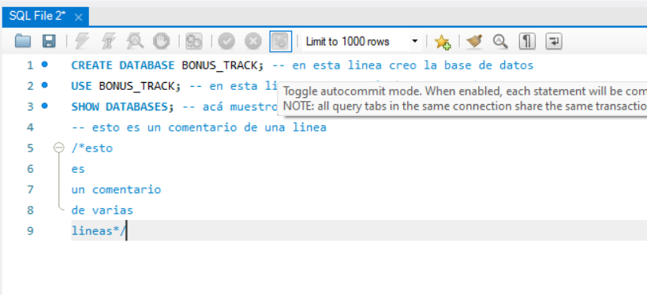
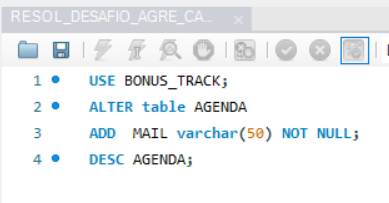
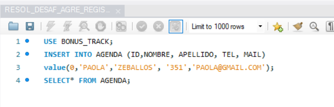
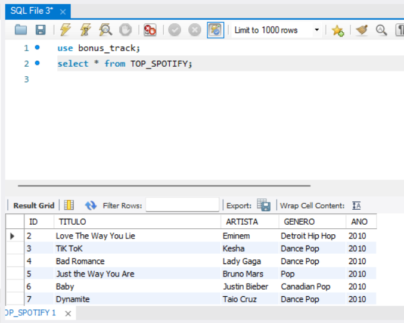
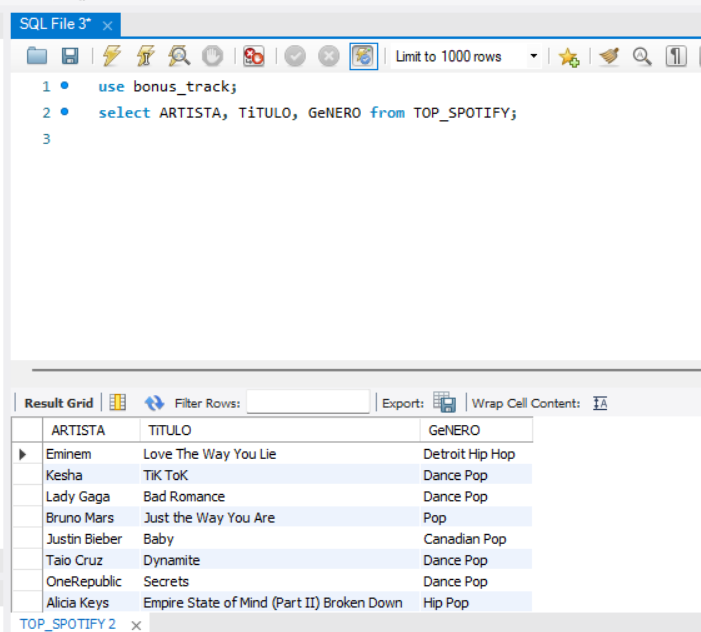
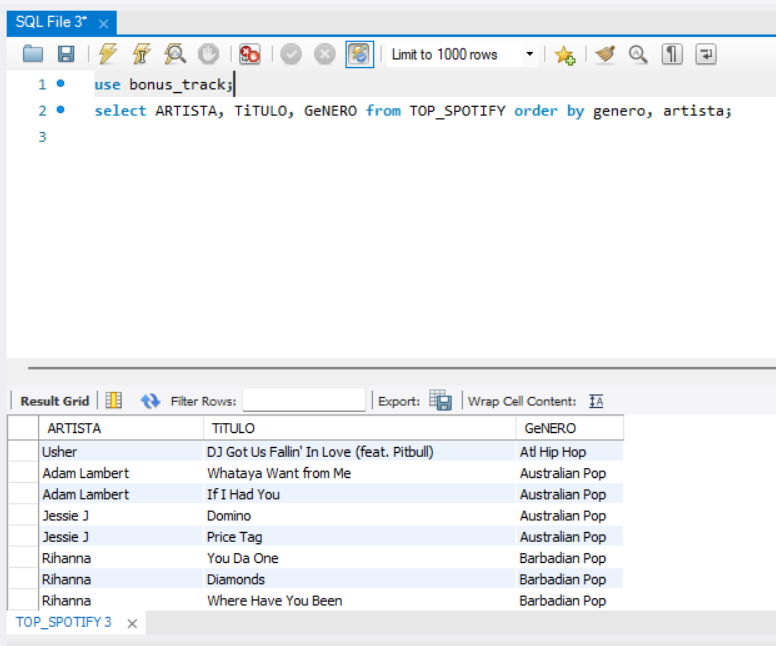
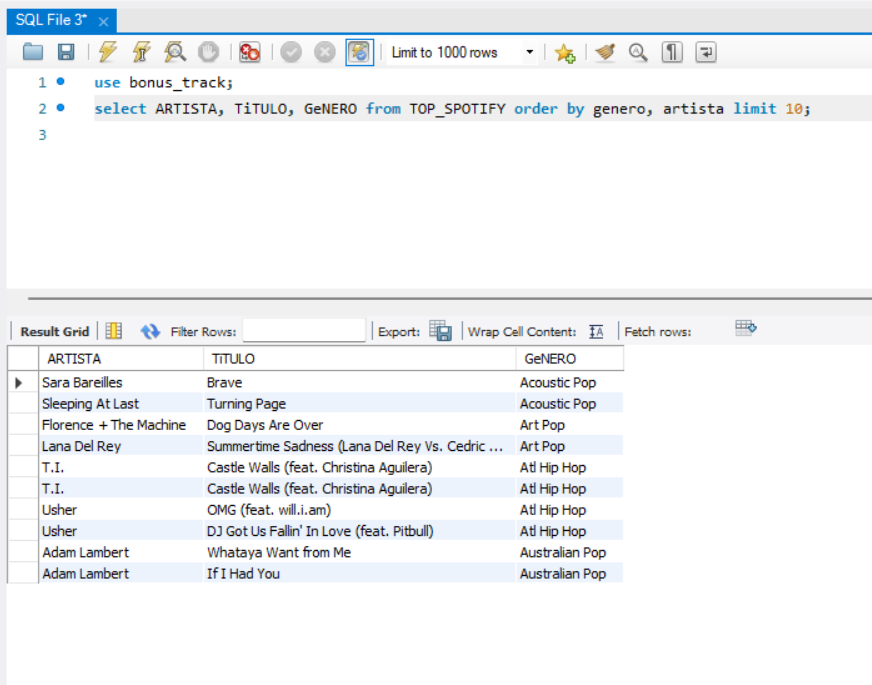
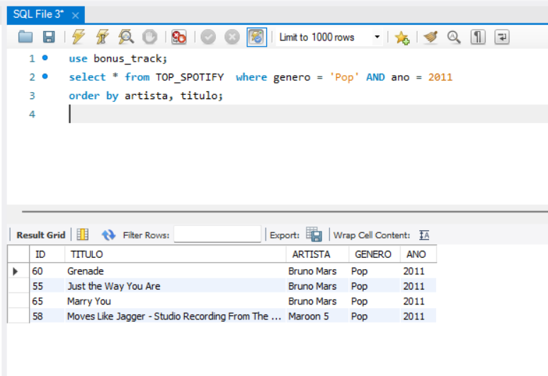

Presentación
Hola soy Paola una docente, en proceso de reinvención profesional, como Tester Manual QA, quien te invita a explorar conocimientos utiles para testing mediante el manejo de Bases de datos con SQL.
En este curso hice la construcción e importación de modelos de bases de datos, con el fin de aprender a interartuar con ellas,
mediante la instalación y utilización de MySQL, con el lenguaje SQL, para realizar
diferentes estructuras de consulta, con operadores, cláusulas y sentencias.

En los siguientes modulos encontraras ejercicios realizados por mi Paola, para manipular datos, registrarlos y agruparlos.
que me permitieron practicar y consolidar los conocimientos
adquiridos en complemento a lo realizados en clases.
-
Módulo 1: Ejercicios para crear Base de Datos, Tabla, Campos y Registros
-
Módulo 2: Ejercicios de Consultas Básicas en Lenguaje SQL.
-
Módulo 3: Funciones integradas, funciones de agregado y agrupamientos.
-
Módulo 4: DDL Create, DML Update, Insert y Delete.
-
Módulo 5: Subconsultas, condicionales y joins.
Crear Base de Datos, Tabla, Campos y Registros
Bueno empecemos, aca puedes ver una forma de como crear una base de datos a la que yo le puse el nombre
BONUS_TRACK.
Luego dentro de esta base de datos cree una tabla con el nombre “AGENDA”
, con la estructura que se muestra en la imagen. Siendo los campos ID, Nombre,
Apellido, Domicilio y Teléfono.( con su tipo de dato correspondiente varchar, integer, NOT NULL
y Primary Key)
despues agregue a la tabla, el campo MAIL con las especifiacciones de
que contenga como máximo 50
caracteres y su carga es obligatoria. Finalmente
inserte registros en la tabla “AGENDA” con mis datos.

.png)


Consultas en Lenguaje SQL
Aqui realice la importacion de un archivo CSV, llamado TOP_SPOTIFY, a la base de datos con el nombre BONUS_TRACK.
para obtener los registros d euna tabla, donde puedo mostrar todo el contenido de la tabla TOP_SPOTIFY mediante la query "select * from", previamente de haberle indicado que use la Base de Datos que guarda el archivo.

Aca les muestro como hacer una consulta que muestre solo algunos campos. En este ejemplo solo en el resultado de la query, se van observan tres columnas ARTISTA, TÍTULO y GÉNERO de la tabla TOP_SPOTIFY.
ocultandose las otras dos columnas de la tabla que son AÑO y ID como vimos en el ejercicion anterior donde visualizamos todo el contenido de la tabla.

Tambien se pueden usar cláusuras como "Order By" para ordenar alfabéticamente el resultado de la consulta, según algún campo/columna. Yo en este caso lo ordene por la columna de los géneros musicales.
y para el caso de aquellos géneros que se repiten, le indique que los subordene de nuevo alfabéticamente, según los nombres de la columna de los artistas.

Se pueden hacer consultas que solo muestren un limite de resultados usando la sentencia "limit". En este ejemplo se observan los 10 priemros registros de la tabla.

Si quisieramos obtener una lista de un campo en este caso serian, todas las canciones pertenecientes a la columna género Pop, pero que fueran solo las lanzadas durante el año( otro campo de la tabla) 2011. y agregar un filtro para mostrar todos los campos de la tabla en el resultado de la consulta, ordenando ademas dicho resultado alfabéticamente según otros campos como por ejemplo, los nombres de los artistas y los nombres de las canciones.
se veria asi...

API Routes

Las API Routes de Next.js permiten crear endpoints de API directamente
en tu aplicación Next.js. Aprenderemos cómo crear, configurar y
utilizar estas rutas para manejar solicitudes y respuestas del
servidor.
Optimización de Imágenes
Next.js ofrece optimización automática de imágenes. En este módulo,
veremos cómo utilizar el componente Image de Next.js para cargar
imágenes de manera eficiente, mejorando el rendimiento y la
experiencia del usuario.
Server-Side Rendering
El Server-Side Rendering (SSR) es una característica poderosa de
Next.js. Exploraremos cómo implementar SSR en nuestras aplicaciones,
sus beneficios en términos de SEO y rendimiento, y cuándo es más
apropiado utilizarlo.